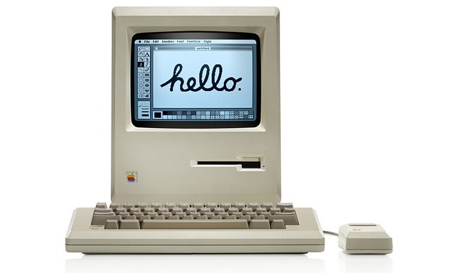
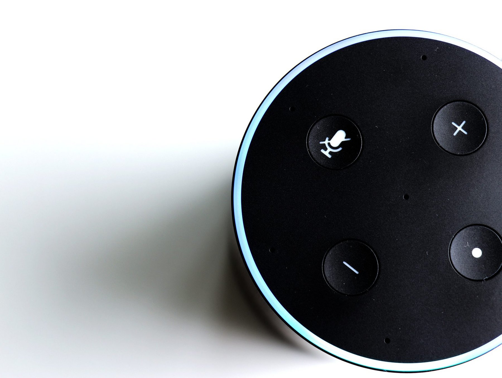

-
Apple Macintosh

Introduction of the Apple Macintosh
1984The Macintosh revolutionized personal computing with its graphical user interface (GUI). It popularized the use of windows, icons, and a mouse, setting the foundation for modern user interfaces.
Click to close -
World Wide Web

Launch of the World Wide Web
1991Tim Berners-Lee's invention of the World Wide Web introduced hypertext and linked information, radically transforming how people interacted with computers and digital content. This moment marked the birth of web design as a discipline.
Click to close -
JavaScript Emerges
JavaScript Emerges
1995The introduction of JavaScript by Netscape Navigator enabled dynamic, interactive websites. This marked a turning point for web interactivity, laying the groundwork for interactive applications like Google Maps and other rich internet experiences.
Click to close -
iPod Release
Release of the iPod
2001Apple's iPod and its click wheel interface became a symbol of seamless interaction design, making it easy for users to navigate thousands of songs with a single hand. It set new standards for consumer electronics UX.
Click to close -
iPhone Launch
Launch of the iPhone
2007The iPhone introduced the multitouch interface and a new paradigm for mobile interaction design. Its App Store ecosystem fostered a wide range of user experiences and influenced the design of mobile interfaces globally.
Click to close -
Voice Assistants

Rise of Voice Assistants
2014The introduction of Amazon Echo and its Alexa voice assistant marked the rise of conversational interfaces. This shift expanded interaction design to include natural language processing and voice-based experiences.
Click to close -
AI Boom
Advancements in AI-Driven Design
2023The integration of AI in tools like Figma (AI Assistant) and the rise of generative AI tools like ChatGPT transformed interaction design workflows. These tools enabled designers to prototype faster and create adaptive, personalized interfaces.
Click to close